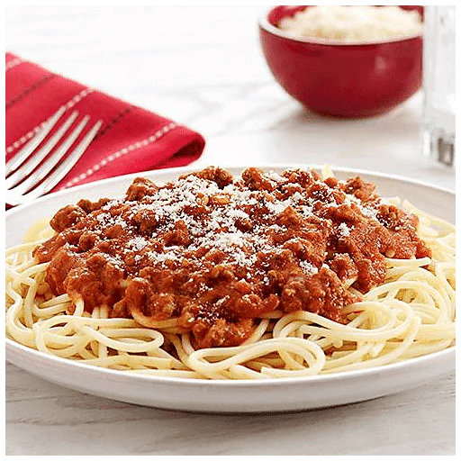

Pasta!!!

Description
A simple spaghetti and meat sauce dish that is heavy on the meat!
Ingredients
- 1 lb Thin Spaghetti
- 45 oz Jar of Traditional Prego Tomato Sauce
- 2 lbs 90-95% Lean Ground Beef
- Salt
- Olive Oil
- Butter
- Parmesan Cheese
Steps
- Fill a large pot with water and place on stove on high to heat
water to a boil.
- Add 1 tsp salt to water once heating process begins
- Add 1 tbsp olive oil to a second pot and set to medium heat.
- Add ground beef to second pot and use a turner to break up and begin
browning the meat.
- The pot of water should come to a boil during the browning process.
Add spaghetti to pot and let it boil for approximately seven minutes.
- While the spaghetti is boiling, continue browning ground beef until no
pink meat remains.
- Add entire jar of sauce and stir in thoroughly. Turn heat to low and
cover with lid. Stir occasionally. Start 15 minute timer.
- Test spaghetti after seven minutes and remove from from burner when
spaghetti is cooked to desired consistency. Drain spaghetti strainer.
- Add two tbsp of butter in small chunks and stir into spaghetti until
melted and evenly distributed. Cover spaghetti while sauce finishes.
- Ensure sauce remains at a simmer and stir occasionally. Remove from
burner 15 minutes after sauce was added.
- Let cool for several minutes and serve topped with Parmesan cheese!